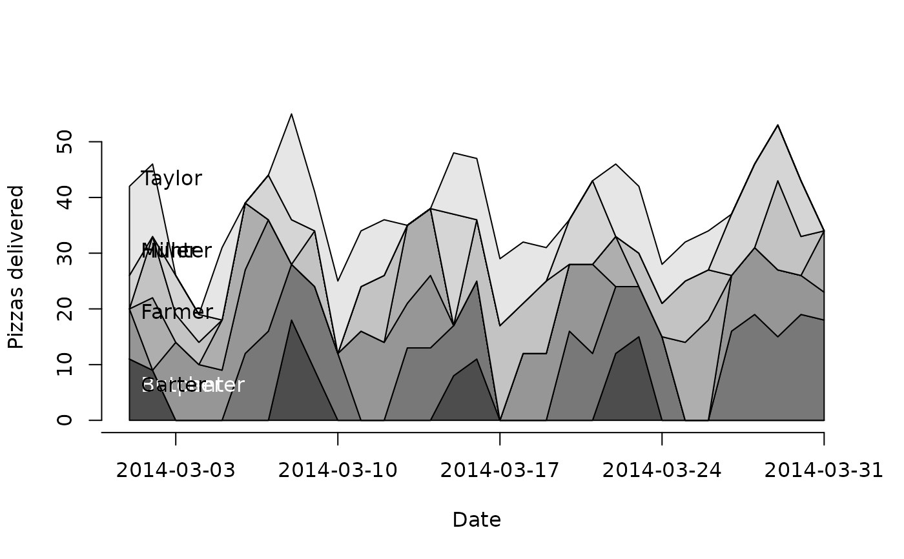
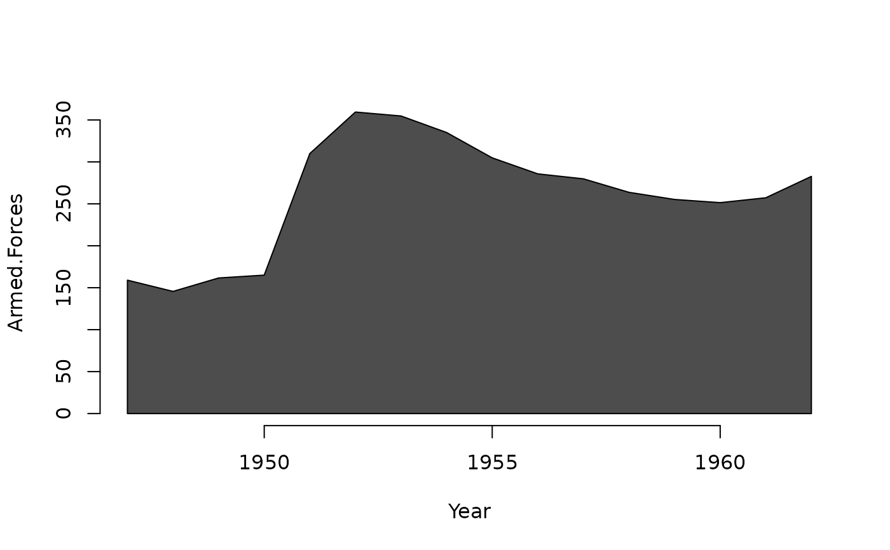
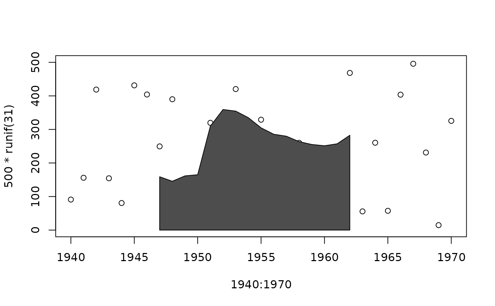
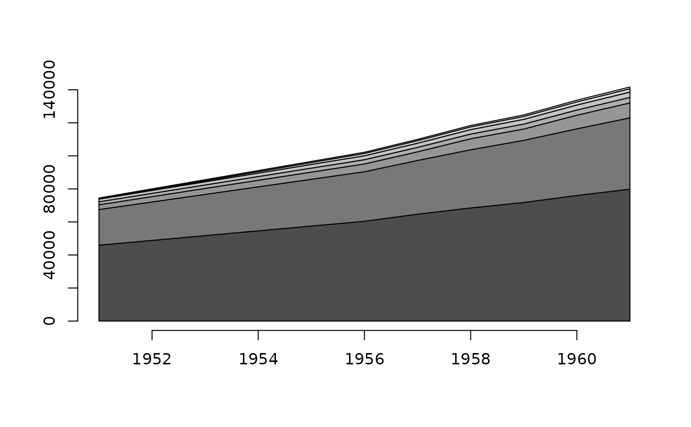
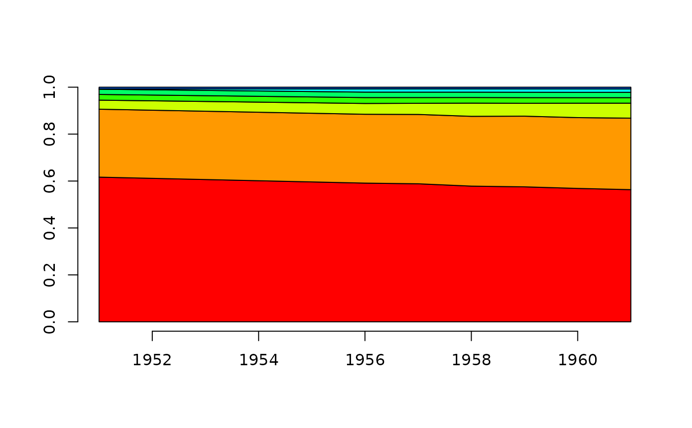
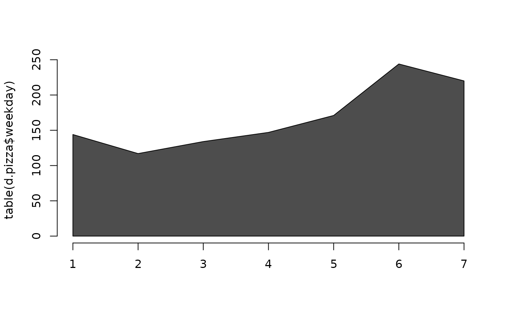
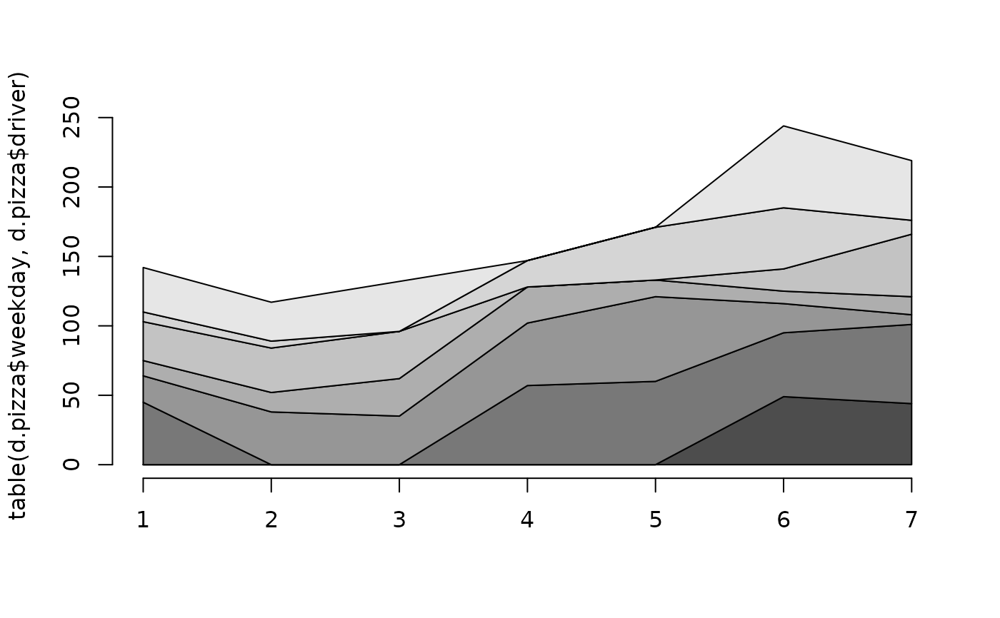
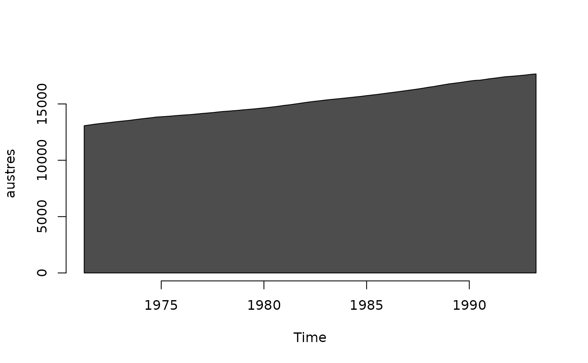
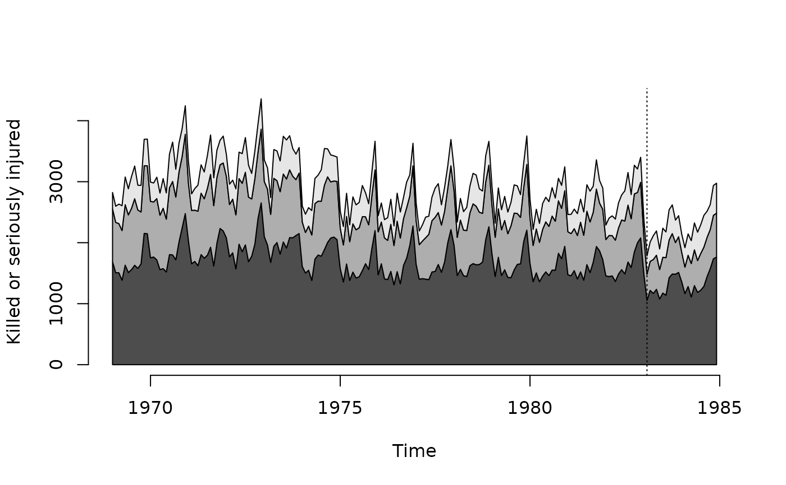

PlotArea.RdProduce a stacked area plot, or add polygons to an existing plot.
# S3 method for default
PlotArea(x, y = NULL, prop = FALSE, add = FALSE, xlab = NULL,
ylab = NULL, col = NULL, frame.plot = FALSE, ...)
# S3 method for formula
PlotArea(formula, data, subset, na.action, ...)numeric vector of x values, or if y=NULL a numeric
vector of y values. Can also be a 1-dimensional table (x values in
names, y values in array), matrix or 2-dimensional table (x values
in row names and y values in columns), a data frame (x values in
first column and y values in subsequent columns), or a time-series
object of class ts/mts.
numeric vector of y values, or a matrix containing y values in columns.
whether data should be plotted as proportions, so stacked areas equal 1.
whether polygons should be added to an existing plot.
label for x axis.
label for y axis.
fill color of polygon(s). The default is a vector of gray colors.
a logical indicating whether a box should be drawn around the plot.
a formula, such as y ~ x or
cbind(y1, y2) ~ x, specifying x and y values. A dot on the
left-hand side, formula = . ~ x, means all variables except
the one specified on the right-hand side.
a data frame (or list) from which the variables in
formula should be taken.
an optional vector specifying a subset of observations to be used.
a function which indicates what should happen when the data contain NA values. Defaults to getOption("na.action").
further arguments are passed to matplot and
polygon.
Matrix of cumulative sums that was used for plotting.
# PlotArea with stapled areas
tab <- table( d.pizza$date, d.pizza$driver )
PlotArea(x=as.Date(rownames(tab)), y=tab, xaxt="n", xlab="Date", ylab="Pizzas delivered" )
# add x-axis and some text labels
xrng <- pretty(range(as.Date(rownames(tab))))
axis(side=1, at=xrng, labels=xrng)
text( x=min(d.pizza$date + .5, na.rm=TRUE), y=cumsum(tab[2,])-2.5, label=levels(d.pizza$driver),
adj=c(0,0.5), col=TextContrastColor(gray.colors(7)))

# formula
PlotArea(Armed.Forces~Year, data=longley)

PlotArea(cbind(Armed.Forces,Unemployed)~Year, data=longley)
# add=TRUE
plot(1940:1970, 500*runif(31), ylim=c(0,500))
PlotArea(Armed.Forces~Year, data=longley, add=TRUE)

# matrix
PlotArea(WorldPhones)

PlotArea(WorldPhones, prop=TRUE, col=rainbow(10))

# table
PlotArea(table(d.pizza$weekday))

PlotArea(table(d.pizza$weekday, d.pizza$driver))

# ts/mts
PlotArea(austres)

PlotArea(Seatbelts[,c("drivers","front","rear")],
ylab="Killed or seriously injured")
abline(v=1983+1/12, lty=3)
